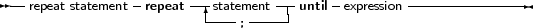

The repeat statement is used to execute a statement until a certain condition is reached. The statement will be executed at least once. The prototype syntax of the Repeat..until statement is
_________________________________________________________________________________________________________Repeat statement

___________________________________________________________________
This will execute the statements between repeat and until up to the moment when Expression evaluates to True. Since the expression is evaluated after the execution of the statements, they are executed at least once.
Be aware of the fact that the boolean expression Expression will be short-cut evaluated by default, meaning that the evaluation will be stopped at the point where the outcome is known with certainty.
The following are valid repeat statements
repeat
WriteLn (’I =’,i); I := I+2; until I>100; repeat X := X/2 until x<10e-3; |
Note that the last statement before the until keyword does not need a terminating semicolon, but it is allowed.
The Break and Continue reserved words can be used to jump to the end or just after the end of the repeat .. until statement.